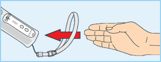

2 |
Gebruiksaanwijzingen |
 |

 Aanvullende informatie over het gebruik van het Wii-polsbandje
Tijdens het spelen met de Wii-afstandsbediening kun je af en toe snelle, krachtige bewegingen maken. Gebruik daarom het Wii-polsbandje om te voorkomen dat je per ongeluk de
Geef jezelf voldoende ruimte!
Je beweegt waarschijnlijk veel rond wanneer je de Wii-afstandsbediening gebruikt, dus zorg dat alle richtingen waarin je mogelijk beweegt, vrij zijn. Zorg dat meubels, voorwerpen en personen zich niet binnen je bereik bevinden, om te voorkomen dat je tijdens het spelen per ongeluk tegen ze aanstoot. Bovendien is het aan te raden om ten minste 1 meter afstand te nemen van de televisie, zoals uitgelegd in de Wii-handleiding. 
Deze informatie is te vinden op
Veel mensen weten niet wat het
verschil is tussen 50Hz en 60Hz, maar aangezien de meeste moderne tv’s weergave van beelden met een 60Hz-frequentie ondersteunen, is het absoluut de moeite waard om erachter te komen of dit ook voor jouw tv geldt. Simpel gezegd, heeft de hoeveelheid Hz (hertz) te maken met het aantal beelden dat per seconde op je scherm verschijnt. 50Hz levert 25 fps (‘frames per second’, oftewel beelden per seconde) op, terwijl 60Hz bijna 30 fps oplevert. Dat lijkt misschien geen groot verschil, maar het verschil in beeldkwaliteit tussen 25 en 30 fps is zeer goed merkbaar. Met 60Hz krijg je een rustiger beeld te zien met minder trillingen, en draait het spel op de optimale snelheid. Dit alles draagt bij aan een uitstekende spelervaring.
Het standaard ingestelde tv-type op de Wii is 50Hz (576i). Je kunt dit veranderen in 60Hz (480i) onder TV-TYPE in de Wii-instellingen. Bepaalde, voornamelijk oudere tv’s kunnen geen 60Hz (480i)-signaal weergeven. Een beperkt aantal gebruikers kan daardoor mogelijk problemen ondervinden wanneer ze dit tv-type willen gebruiken op hun tv. Raadpleeg de handleiding van de tv of neem contact op met de fabrikant, om te weten te komen of de tv de 60Hz (480i)-stand ondersteunt.
Heb je het tv-type veranderd in 60Hz (480i) en krijg je een leeg of gestoord scherm te zien, dan is je tv waarschijnlijk niet compatibel met de 60Hz (480i)-stand. Om terug te keren naar de standaardinstelling moet je op het Wii-systeem de RESET-knop indrukken, terwijl je omlaag op de richtingsknop van de Wii-afstandsbediening houdt ingedrukt. Het Wii-systeem zal dan opnieuw opstarten in de 50Hz (576i)-stand. Raadpleeg de Wii-handleiding voor kanalen en instellingen, voor meer informatie over het instellen van het tv-type.
Ook als je het RGB-snoer voor Wii (RVL-013, los verkrijgbaar) aansluit op een tv die is voorzien van een SCART-aansluiting en compatibel is met PAL60, of als je het componentsnoer voor Wii (RVL-011, los verkrijgbaar) aansluit op een tv die is voorzien van een component-videoaansluiting, zul je een rustiger beeld zien met minder trillingen.
EDTV/HDTV (480p) is een weergavestand waarin de gebruiker het spel met de hoogst mogelijke beeldkwaliteit kan spelen. Dit betekent dat het spel op de optimale snelheid draait en dat de beelden zeer scherp zijn, met het hoogst mogelijke aantal beelden per seconde, en dat ze weinig tot geen trillingen vertonen. Dit zorgt voor de optimale spelervaring. Nintendo® probeert de hoge beeldkwaliteit van spellen te waarborgen.
Het kan voorkomen dat dit signaal niet kan worden weergegeven, afhankelijk van de tv en het snoer dat wordt gebruikt. Raadpleeg de handleiding van de tv of neem contact op met de fabrikant, om te weten te komen of de tv het progressieve signaal ondersteunt dat nodig is voor weergave van EDTV/HDTV (480p). Zorg dat het componentsnoer voor Wii (RVL-011, los verkrijgbaar) wordt gebruikt en Progressive Scan is ingeschakeld op de tv, wanneer je het tv-type instelt op deze stand.
Het standaard ingestelde tv-type op de Wii is 50Hz (576i). Je kunt dit veranderen in EDTV/HDTV (480p) onder TV-TYPE in de Wii-instellingen. Raadpleeg de Wii-handleiding voor kanalen en instellingen, voor meer informatie over het instellen van het tv-type.
|
 los te laten op de Wii-afstandsbediening - LAAT DE Wii-AFSTANDSBEDIENING ZELF NIET LOS. Als je handen beginnen te zweten, neem dan even de tijd om je handen en de Wii-afstandsbediening te drogen. Als je meer met de Wii-afstandsbediening zwaait dan nodig is en hem loslaat, kan het Wii-polsbandje mogelijk breken, en kun je de controle over de Wii-afstandsbediening verliezen. Dit kan mensen om je heen verwonden of schade toebrengen aan voorwerpen.
los te laten op de Wii-afstandsbediening - LAAT DE Wii-AFSTANDSBEDIENING ZELF NIET LOS. Als je handen beginnen te zweten, neem dan even de tijd om je handen en de Wii-afstandsbediening te drogen. Als je meer met de Wii-afstandsbediening zwaait dan nodig is en hem loslaat, kan het Wii-polsbandje mogelijk breken, en kun je de controle over de Wii-afstandsbediening verliezen. Dit kan mensen om je heen verwonden of schade toebrengen aan voorwerpen. |
 |
 |